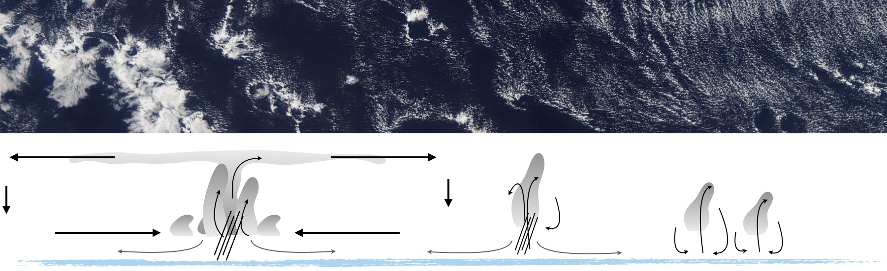
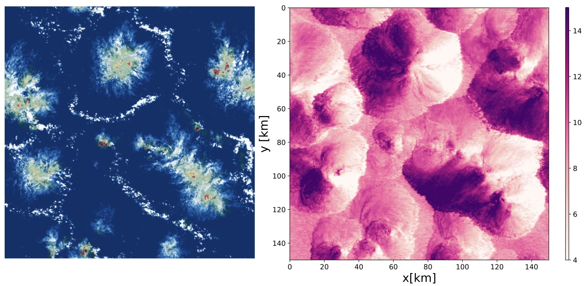
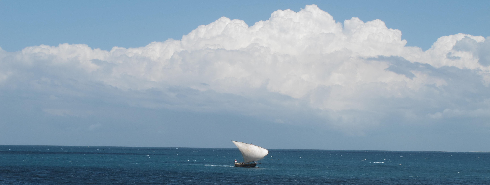
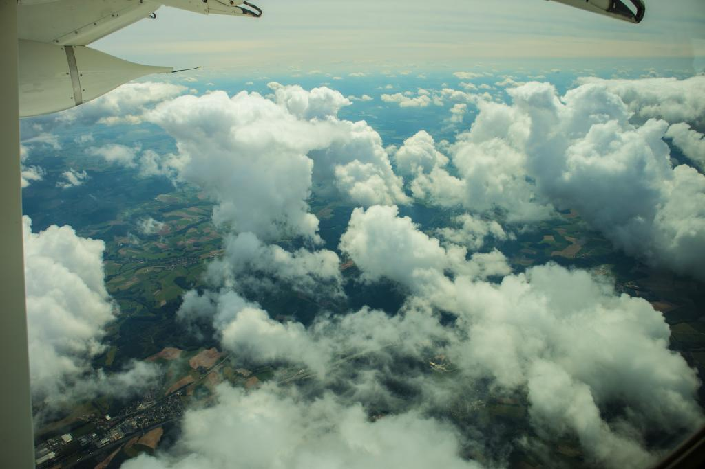
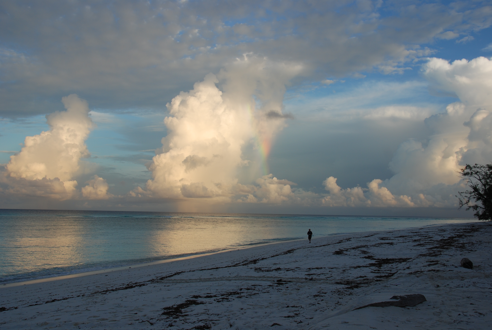
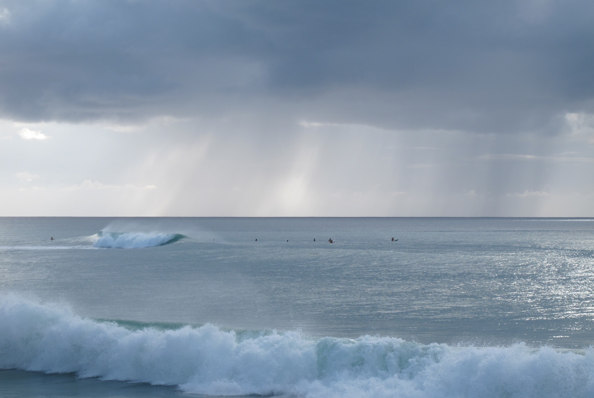

Clouds blowing (in) the Wind

With a group of motivated scientists I try to unravel the role of convective clouds in weather and climate,
with a special focus on cloud-wind interactions. Read more about my research and that of my group below,
including the current CMTRACE project funded by the Dutch Research Council (NWO)
and the CloudBrake project funded by the European Research Commission.
CMTRACE
Clouds often visualize how the wind blows, but rarely are cloud measurements used to understand how clouds themselves change winds.
Our current NWO VIDI project CMTRACE ('Tracing convective momentum transport through complex cloudy atmospheres') combines unique measurements with fine-scale simulations to unravel the patterns of wind in diverse cloud fields spanning from the subtropical North Atlantic to the midlatitudes over land.
Scanning wind lidars and cloud radars deployed at the Ruisdael Observatory (Netherlands) take unique measurements of winds through clouds and
existing measurements from previous campaigns are analyzed and used for multi-day hindcasts runs with large-eddy simulation and the KNMI weather model HARMONIE.
CMTRACE strives to identify mechanisms that are key to convective momentum transport (CMT) and validate and improve its parameterization in weather prediction models.

Research themes

Central to the ERC StG CloudBrake project was the question: how does trade-wind convection influence the large-scale wind?
Does it accelerate or decelerate the flow, and at what height levels?
To answer these questions we analyzed the momentum budget observed
over a 200 km circular area during the EUREC4A field study in Jan-Feb 2020. Interpreting the residual in the budget as the action of
turbulence, convection and mesoscale flows, we find that the wind is decelerated over a layer on average ~ 1.5 km deep, but that
friction-induced ageostrophic wind turning of wind is weak. An acceleration of wind is also observed in the upper cloud layer and trade-inversion.
The observations suggest that convection and mesoscale circulations play a key role in the observed momentum transport.

Shallow cumulus convection is very typical over land in the midlatitudes in Spring and Summer. As part of CloudBrake, we analyzed observations and simulations of winds, momentum transport and clouds
to investigate how cumulus convection influences wind near the surface and aloft. Analyses focused on a 9-year climatology of Cabauw observations and daily limited-domain LES hindcasts to reveal differences
in wind profiles and momentum transport with cloud and weather regimes.
We also carried out a dual-airplane flight mission measuring the profile of wind with airborne Doppler wind lidar as well as turbulence below and through clouds.
As part of the ERC StG CloudBrake we explored the sensitivity of trade-wind convection, cloudiness and its organization to vertical wind shear. Does wind shear limit or enhance convection?
And how does moisture aggregation and cloud organization change in the presence of forward shear or backward shear?

In nature, moist convection prefers three modes: shallow, congestus and deep cumulus.
Using a conceptual model, can we understand what processes help set the depth of convection in tropical circulations?

Warm rain is that produced by clouds with tops below the freezing level.
Observations reveal that warm rain is a significant part of rainfall over global oceans,
with implications for atmospheric dynamics.
Global models disagree on how low clouds respond to increasing carbon dioxide concentrations,
and observations show how this behavior relates to the vertical structure of low cloud produced by models.